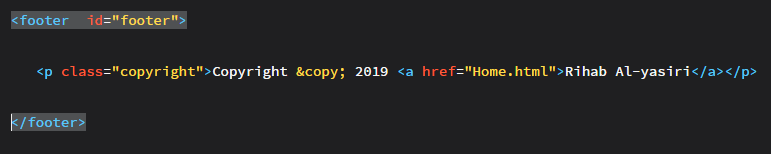
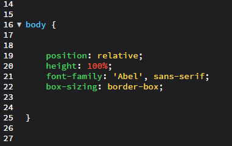
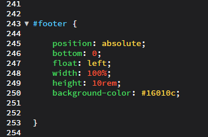

What is the footer (Navigation - bar) of a web page?
Footer is the bottom of a webpage. It has the part of copyright or the address and contact of the company. One of the biggest problem a large number of programmers face, including me in the begining, is to set the footer on the bottom of the page. It can be frustrating to every programmer, because the footer is dependent on the content. When your page is not finished and you wrote just some sentences the footer will set not at the bottom also when your code is right and this do FRUSTRATE .
What is the content of the footer?
logo of the company.
links to another pages within the website.
social media accounts, thant belongs to the company/owner.
terms of user :it converns the use of the website by visitors.
privacy of policy : it fullfills a legal requirements to protect customer or clients privacy.
newsletter registeration.
You should not put all of the content in your footer; it will make it messy... be careful! always try to keep it simple to attract the attention of clients/visitors and style it with dark color or a photo that you like just to make it stand out from the rest of the content on the web page.
How to code it on HTML and CSS and how to set it on the bottom of the website?
As a beginner, the footer could be a nightmare :( Sorry for saying that, but it is true, because if you position it wrong, it will never be at the bottom. And YOU should be aware that, when the page doesn't contain much information, the footer will not be set at the bottom until more information is added for the whole page, like text or images. Then you will see by default the footer down.
Then what is the code of the footer? Above is the code in HTML ( later on in CSS ) : “ footer tags “ presents the parent tag, that contains all the details that we are previecly describe, “ paragraph tag “ represents the child element, that contains text of the copyright and so on.
Now the most exciting part how to set it on the bottom of the page
well, let's think a moment : the paragraph tag < p > < ⁄ p > from the image above is the child element of the footer, right? So the footer is a child element of which element? Did you got it, right...... the footer is a child element of the body so that why we must position the footer relatively to the body and set it on the bottom.
 As you can see above in the body rule, it has the position property with a value of relative and in thefooter rule, it has the position property too with the value of absolute , imagine that the body is a big frame of photo and the footer is a small photo and you are trying to positing it on the bottom of the frame depending on the position of the frame ( body ), so the position properties with value relative and absolute they always work together: absolute depending on relative but with this properties will not set at the bottom, because we need the property of bottom with value of zero, with this property we are just telling our browser to put the footer at the bottom of the body ( Site ) please and with the property float with value of left you can set it on the left of the bottom.
Well, we have reached the end of this blog. I hope you learned how to deal with the footer for your own site. If you are facing any problems, you can always contact me .... thanks for reading this blog.